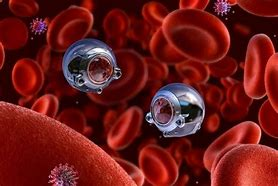

Nanorobots are microscopic machines designed to perform tasks at the nanoscale within the human body.
These advanced devices have the potential to revolutionize medicine by enabling targeted drug delivery, facilitating minimally invasive procedures, and enhancing treatment efficacy for diseases such as cancer and diabetes.
There are four primary types of nanorobots, each powered by different mechanisms. However, despite their significant potential, they face several challenges, including high production costs, immune system responses, and limitations in available materials.
Ongoing research and technological advancements are gradually addressing these obstacles. With continued investment and innovation, nanorobots could redefine modern healthcare by offering novel, less invasive therapeutic approaches for various diseases..
Introduction
Nanorobots, also known as nanobots, are microscopic robots typically measuring between 50 and 100 nanometers in width.
They are currently being explored for their potential to perform complex medical procedures at the nanoscale—tasks that would be impossible or too invasive for human surgeons to execute.
By integrating nanobots into medical treatments, procedures could become significantly less invasive, resulting in minimal scarring and faster recovery times.
Researchers and medical professionals anticipate that these advanced robotic systems could be introduced into clinical practice as early as 2030, potentially transforming the future of healthcare.
Types of Nanorobots
Nanobots fall into one of four categories:
Cars - Nanorobotic "cars" represent the most advanced nanodevices developed to date.
These microscopic machines are capable of movement through the use of chemical and electromagnetic catalysts.
However, precise control over their motion remains a challenge, as the motors that propel these nanorobotic cars must be carefully regulated to enable accurate steering and navigation.
Motors -The motors of nanorobotic cars harness energy generated by the movement of surrounding molecules, converting these dynamic changes into propulsion.
This process enables controlled motion at the nanoscale, though precise navigation remains a key challenge in their development.
Shuttles - Shuttles can transport specific drugs to targeted areas in the body.
Diseased areas usually have specific chemical or Ph markers so when the shuttle senses the corrected area it knows to release the drug.
Switches- Nanobot switches operate in a binary "on" or "off" state and can be activated or deactivated by various external stimuli, including heat, chemical signals, magnetic fields, or enzymes.
These switches play a crucial role in controlling nanobot functions, enabling precise regulation of their activity within biological and medical applications. ( ,(Nanobots 2012)
Typically constructed from carbon-based materials arranged in a diamond-like structure, nanobots are both durable and lightweight, providing the necessary strength for movement within the human body.
Additionally, their ultra-smooth surface reduces the likelihood of detection and attack by the immune system, enhancing their effectiveness in medical applications.
How do Nanorobots navigate
Magnetic Resonance Imaging (MRI) devices are utilized to track and precisely position nanobots within the body.
To enhance their biocompatibility and minimize toxicity, nanobots are coated with specialized materials that not only prevent adverse biological reactions but also improve their visibility under MRI scanning, ensuring accurate monitoring and control during medical applications.. ( (Magnetically Driven Micro and Nanorobots 2021)
Once in the body, an external magnetic field generated by the MRI scanner will navigate the nanobot around the body.
How are Nanobots powered
There are many ways a nanobot is powered and more ways are still being created now most fall under one of three categories:
Self-propelled machines - self-propelled machines have been made in various shapes including spherical, conical, tubular, helical or asymmetrical geometries.
Fuel-propelled motors - Fuel-propelled motors operate when a particular fuel or chemical produces the energy needed to start moving.
Fuel-free propelled motors - Fuel-free propelled motors work through the energy created through magnetic fields or ultra sonic symbols.
Nanobots can be powered by generators and capacitors.( (ScienceDirect 2020) .
Generators on board the nanobot use electrolytes found in the blood and are used as a chemical catalyst that when combined with the nanobots creates the internal energy needed for the nanobot to work. For external power, a small fiber optic wire is attached to the device.
Then pulses of light are sent through it, these pulses of electricity power can the nanobots. Additionally, magnetic fields can be used to induce electrical currents using a closed conducting loop contained within the nanobots. Ultrasonic signals are also used, employing a material called a piezoelectric membrane, which collects ultrasonic waves and transforms them into electrical power.( (Daniel Nelson, 2020 ))
Uses of Nanorobots
Doctors and researchers anticipate that nanobots will play a pivotal role in the treatment of cancer, gene therapy, and diseases such as diabetes, AIDS, cystic fibrosis, and heart disease.
While extensive research is being conducted to develop effective nanobot-based therapies, progress remains slow due to challenges in securing adequate funding and sourcing suitable materials.
Despite these obstacles, significant breakthroughs have been made, particularly in cancer treatment and surgical applications.
Currently, nanobots are programmed to identify twelve types of cancer cells and are capable of performing advanced biomedical interventions, including minimally invasive surgeries, to enhance treatment efficacy (Nanobots in medical field 2024)
The materials used in nanobot construction play a critical role in their functionality and biocompatibility.
During testing, researchers observed that antibodies would attack nanobots, impairing their effectiveness.
To mitigate this issue, nanobots are designed with an ultra-smooth surface and are composed of carbon-based materials, which increase their chances of successfully delivering treatment.
Additionally, nanorobots have demonstrated potential as targeted drug carriers, transporting and releasing therapeutic agents in a controlled manner to treat tumors.
As research advances, nanorobots are rapidly finding diverse applications in medicine and are expected to significantly improve disease treatment and patient outcomes.

Nanobots are currently disrupting the biomedicine sector, with developments in cancer diagnosis and drug delivery.By Azonano,2023
Problems and challenges faced
Nanobots are gaining increasing attention in the medical field due to their potential to revolutionize treatment methods.
However, their development and implementation come with significant challenges.
One of the primary obstacles is the high cost of research and production, as well as the limited availability of suitable materials.
Additionally, the human immune system presents a major hurdle, as it is designed to detect and eliminate foreign bodies, including nanobots.
Upon injection, nanobots are often attacked and destroyed before they can complete their intended functions.
While researchers have developed methods to reduce immune responses, this remains an ongoing challenge requiring further refinement.
Another issue is the influence of gravitational forces on nanobot movement.
The term microgravity (micro-g) refers to an environment of near-weightlessness, where gravitational forces are present but minimal.
Despite its small magnitude, this force can still affect the way nanobots navigate within the human body, posing difficulties for precise control and targeted delivery.
While these challenges persist, continued advancements in nanotechnology and biomedical engineering are gradually addressing these limitations, bringing nanobot-based treatments closer to widespread clinical application. (, (Microgravity and Nanomaterials 2021)
Conclusion
In conclusion, nanorobots hold immense potential to revolutionize the medical field.
From there ability to deliver drugs, perform surgeries and improve efficiency in treating diseases.
However, challenges like cost, materials needed, and immune response remain.
Despite this many hurdles are being made and as technology evolves these problems are likely to be resolved by increasing our uses and needs for nanorobots.
With further research and funding nanobots could transform the way we heal people in medicine.